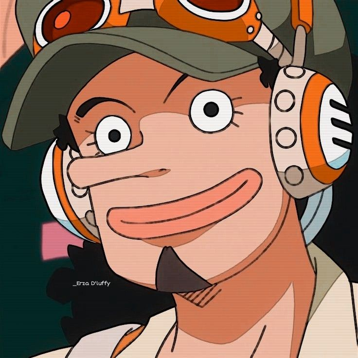

About
"God" Usopp is the sniper of the Straw Hat Pirates and one of the Senior Officers of the Straw Hat Grand Fleet.
He is the fourth member of the crew and the third to join,
doing so at the end of the Syrup Village Arc.
Although he left the crew during the Water 7 Arc,
He rejoined at the end of the Post-Enies Lobby Arc
Usopp is the son of Yasopp and the late Banchina.
He was born and raised in Syrup Village, serving as "captain" of the Usopp Pirates and being Kaya's close friend.
After working with the Straw Hats to defeat Kuro and the Black Cat Pirates, he was invited to join the crew.
Despite his usual cowardice, Usopp dreams of becoming a brave warrior of the sea just like his father and lives every day in pursuit of living up to this dream.
